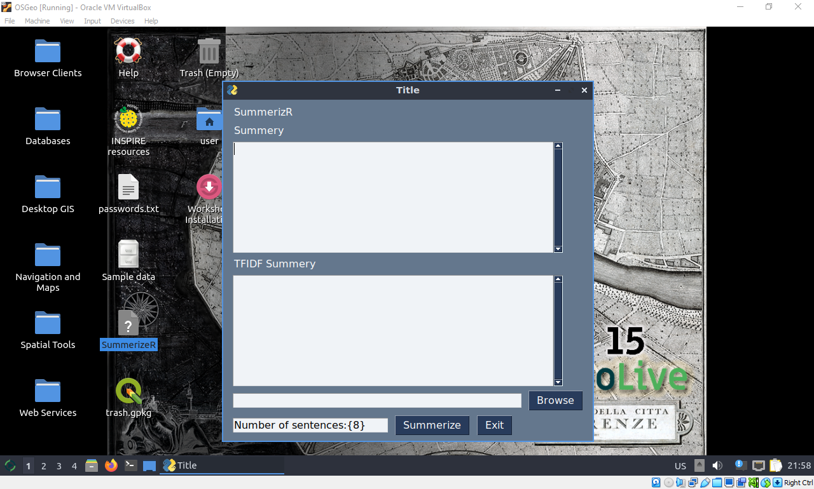

We wear different clothes and do different things in different weather conditions.
Weather stations around the world measure different parts of weather.
Climate tells us what kinds of weather usually happen in an area at different times of the year.
Weather includes wind, lightning, storms, hurricanes, tornadoes (also known as twisters), rain, hail, snow, and lots more.
Ways to measure weather are wind speed, wind direction, temperature and humidity.Natural Language Processing
In anthropology, they have concepts called deep dives and shallow dives. Deep dives are intense, purposeful reads of a body of text (corpus) that are intended to take a nuanced read to the material. Shallow dives, on the other hand, are rapid assessments and skimming of that corpus (typically much larger in size than a deep read of the same size/scale) to extract some of those potential nuggets of knowledge. While that deep dive will always be more preferable in my mind, there is a lot of value we can gain from simply counting the words and extracting the statistically interesting ones. While this isn’t particularly geographic, it is a common desire and has applications in summarization and assessment. Below is a short primer gratefully pilfered from the internet and several of my attempts to execute this including NEPA WatchR, a document differencing and content analysis tool written in R, and SummerizeR, a GUI python based wrapper that summarizes markdown files.
A quick note on the differences between NLP, LLM, and AI
Types of Text Summarization
The following is gratefully pilfered from https://www.analyticsvidhya.com/blog/2023/03/exploring-the-extractive-method-of-text-summarization/ and very mininmally modified for my use.
Broadly, NLP text summarization techniques can be divided into two main categories.
- Extractive Approach
- Abstractive Approach
Let’s dive a little deeper into each of the above-mentioned categories. 
Extractive Summarization
Extractive Summarization, as the name implies, identifies important sentences in a corpus and returns them, not altering the original sentence which more closely reflects the authors original intent. Now, the question that comes is, exactly on what basis are those sentences termed as important? A ranking algorithm is used, which assigns scores to each of the sentences in the text based on their relevance to the overall meaning of the document. The most relevant sentences are then chosen to be included in the summary. There are various ways through which the ranking of sentences can be performed.
- TF-IDF (term frequency-inverse document frequency)
- Graph-based methods such as TextRank
- Machine learning-based methods such as Support Vector Machines (SVM) and Random Forests.
The main motive of the extractive method is to maintain the original meaning of the text. Also, this method works well when the input text/content is already in a well-structured manner, both physically and logically, like the content in newspapers or academic articles.
Abstractive summarizations, unlike the extractive method, simply doesn’t pick out the important sentences, rather, it analyses the input text and generates new phrases or sentences that capture the essence of the original text and convey the same meaning as the original text but more concisely and coherently. Methods of accomplishing this include:
- a neural network model
- natural language generation (NLG)
The resulting summaries are usually shorter and more readable than the ones generated by the extractive method, but they can sometimes contain errors or inaccuracies. Here I’ll pilfer the example from the article and demonstrate how to apply a few simplistic extractive methods to a corpus and wrapper this in a PySimpleGUI.
Frequency-based Approach
```{python}
# import the required libraries
import nltk
nltk.download('punkt') # punkt tokenizer for sentence tokenization
nltk.download('stopwords') # list of stop words, such as 'a', 'an', 'the', 'in', etc, which would be dropped
from collections import Counter # Imports the Counter class from the collections module, used for counting the frequency of words in a text.
from nltk.corpus import stopwords # Imports the stop words list from the NLTK corpus
# corpus is a large collection of text or speech data used for statistical analysis
from nltk.tokenize import sent_tokenize, word_tokenize # Imports the sentence tokenizer and word tokenizer from the NLTK tokenizer module.
# Sentence tokenizer is for splitting text into sentences
# word tokenizer is for splitting sentences into words
# this function would take 2 inputs, one being the text, and the other being the summary which would contain the number of lines
def generate_summary(text, n):
# Tokenize the text into individual sentences
sentences = sent_tokenize(text)
# Tokenize each sentence into individual words and remove stopwords
stop_words = set(stopwords.words('english'))
# the following line would tokenize each sentence from sentences into individual words using the word_tokenize function of nltk.tokenize module
# Then removes any stop words and non-alphanumeric characters from the resulting list of words and converts them all to lowercase
words = [word.lower() for word in word_tokenize(text) if word.lower() not in stop_words and word.isalnum()]
# Compute the frequency of each word
word_freq = Counter(words)
# Compute the score for each sentence based on the frequency of its words
# After this block of code is executed, sentence_scores will contain the scores of each sentence in the given text,
# where each score is a sum of the frequency counts of its constituent words
# empty dictionary to store the scores for each sentence
sentence_scores = {}
for sentence in sentences:
sentence_words = [word.lower() for word in word_tokenize(sentence) if word.lower() not in stop_words and word.isalnum()]
sentence_score = sum([word_freq[word] for word in sentence_words])
if len(sentence_words) < 20:
sentence_scores[sentence] = sentence_score
# checks if the length of the sentence_words list is less than 20 (parameter can be adjusted based on the desired length of summary sentences)
# If condition -> true, score of the current sentence is added to the sentence_scores dictionary with the sentence itself as the key
# This is to filter out very short sentences that may not provide meaningful information for summary generation
# Select the top n sentences with the highest scores
summary_sentences = sorted(sentence_scores, key=sentence_scores.get, reverse=True)[:n]
summary = ' '.join(summary_sentences)
return summary
```Using a Sample Text From Wikipedia to Generate Summary
```{python}
text = '''
Weather is the day-to-day or hour-to-hour change in the atmosphere.
Weather includes wind, lightning, storms, hurricanes, tornadoes (also known as twisters), rain, hail, snow, and lots more.
Energy from the Sun affects the weather too.
Climate tells us what kinds of weather usually happen in an area at different times of the year.
Changes in weather can affect our mood and life. We wear different clothes and do different things in different weather conditions.
We choose different foods in different seasons.
Weather stations around the world measure different parts of weather.
Ways to measure weather are wind speed, wind direction, temperature and humidity.
People try to use these measurements to make weather forecasts for the future.
These people are scientists that are called meteorologists.
They use computers to build large mathematical models to follow weather trends.'''
summary = generate_summary(text, 5)
summary_sentences = summary.split('. ')
formatted_summary = '.\n'.join(summary_sentences)
print(formatted_summary)
```Output
The following output is what we get.
So, the above code takes a text and a desired number of sentences for the summary as input and returns a summary generated using the extractive method. The method first tokenizes the text into individual sentences and then tokenizes each sentence into individual words. Stopwords are removed from the words, and then the frequency of each word is computed. Then, the score for each sentence is computed based on the frequency of its words and the top n sentences with the highest scores are selected to form the summary. Finally, the summary is generated by joining the selected sentences together. In the next section, we’ll explore how the extractive method can be further improved using advanced techniques such as TF-IDF.
TF-IDF Approach
```{python}
# importing the required libraries
# importing TfidfVectorizer class to convert a collection of raw documents to a matrix of TF-IDF features.
from sklearn.feature_extraction.text import TfidfVectorizer
# importing cosine_similarity function to compute the cosine similarity between two vectors.
from sklearn.metrics.pairwise import cosine_similarity
# importing nlargest to return the n largest elements from an iterable in descending order.
from heapq import nlargest
def generate_summary(text, n):
# Tokenize the text into individual sentences
sentences = sent_tokenize(text)
# Create the TF-IDF matrix
vectorizer = TfidfVectorizer(stop_words='english')
tfidf_matrix = vectorizer.fit_transform(sentences)
# Compute the cosine similarity between each sentence and the document
sentence_scores = cosine_similarity(tfidf_matrix[-1], tfidf_matrix[:-1])[0]
# Select the top n sentences with the highest scores
summary_sentences = nlargest(n, range(len(sentence_scores)), key=sentence_scores.__getitem__)
summary_tfidf = ' '.join([sentences[i] for i in sorted(summary_sentences)])
return summary_tfidf
```Using a Sample Text to Check the Summary
```{python}
text = '''
Weather is the day-to-day or hour-to-hour change in the atmosphere.
Weather includes wind, lightning, storms, hurricanes, tornadoes (also known as twisters), rain, hail, snow, and lots more.
Energy from the Sun affects the weather too.
Climate tells us what kinds of weather usually happen in an area at different times of the year.
Changes in weather can affect our mood and life. We wear different clothes and do different things in different weather conditions.
We choose different foods in different seasons.
Weather stations around the world measure different parts of weather.
Ways to measure weather are wind speed, wind direction, temperature and humidity.
People try to use these measurements to make weather forecasts for the future.
These people are scientists that are called meteorologists.
They use computers to build large mathematical models to follow weather trends.'''
summary = generate_summary(text, 5)
summary_sentences = summary.split('. ')
formatted_summary = '.\n'.join(summary_sentences)
print(formatted_summary)
```The following output is what we get.
Energy from the Sun affects the weather too.
Changes in weather can affect our mood and life.
We wear different clothes and do different things in different weather conditions.
Weather stations around the world measure different parts of the weather.
People try to use these measurements to make weather forecasts for the future.The above code generates a summary for a given text using a TF-IDF approach. A function to generate a summary that takes a text parameter and an n parameter(number of sentences in summary). The function tokenizes the text into individual sentences, creates a TF-IDF matrix using the TfidfVectorizer class, and computes the cosine similarity between each sentence and the document using the cosine_similarity function. Next, the function selects the top n sentences with the highest scores using the nlargest function from the heapq library and joins them into a string using the join method.
SummerizeR
These functions are great, but this workflow is less than elegant and barely programatic, so lets waste the afternoon slapping some window paint on this in the form of a PySimpleGUI and some helpers to let us tweak the number of sentences returned and copy-paste this into our system more seamlessly.
```{python}
from pathlib import Path
import PySimpleGUI as sg
import os.path
import nltk
nltk.download("punkt") # punkt tokenizer for sentence tokenization
nltk.download("stopwords") # list of stop words, such as 'a', 'an', 'the', 'in', etc, which would be dropped
from collections import Counter # Imports the Counter class from the collections module, used for counting the frequency of words in a text.
from nltk.corpus import stopwords # Imports the stop words list from the NLTK corpus
from nltk.tokenize import (sent_tokenize,word_tokenize) # Imports the sentence tokenizer and word tokenizer from the NLTK tokenizer module.
from sklearn.feature_extraction.text import TfidfVectorizer
from sklearn.metrics.pairwise import cosine_similarity
from heapq import nlargest
def popup_text(filename, text):
layout = [[sg.Multiline(text, size=(80, 25)),],]
win = sg.Window(filename, layout, modal=True, finalize=True)
while True:
event, values = win.read()
if event == sg.WINDOW_CLOSED:
break
win.close()
def generate_summary(text, n):
sentences = sent_tokenize(text)
stop_words = set(stopwords.words("english"))
words = [word.lower() for word in word_tokenize(text) if word.lower() not in stop_words and word.isalnum()]
word_freq = Counter(words)
sentence_scores = {}
for sentence in sentences:
sentence_words = [word.lower() for word in word_tokenize(sentence) if word.lower() not in stop_words and word.isalnum()]
sentence_score = sum([word_freq[word] for word in sentence_words])
if len(sentence_words) < 9:
sentence_scores[sentence] = sentence_score
summary_sentences = sorted(sentence_scores, key=sentence_scores.get, reverse=True)[:n]
summary = " ".join(summary_sentences)
return summary
def generate_tfidf_summary(text, n):
sentences = sent_tokenize(text)
vectorizer = TfidfVectorizer(stop_words="english")
tfidf_matrix = vectorizer.fit_transform(sentences)
sentence_scores = cosine_similarity(tfidf_matrix[-1], tfidf_matrix[:-1])[0]
summary_sentences = nlargest(n, range(len(sentence_scores)), key=sentence_scores.__getitem__)
summary_tfidf = " ".join([sentences[i] for i in sorted(summary_sentences)])
return summary_tfidf
right_click_menu = ['', ['Copy', 'Paste', 'Select All', 'Cut']]
SUM_MLINE_KEY = '-SUMMLINE-'
TFIDF_MLINE_KEY = '-TFIDFMLINE-'
F_KEY = '-FILE-'
NSENT_KEY = '-NSENT-'
def do_clipboard_operation(event, window, element):
if event == 'Select All':
element.Widget.selection_clear()
element.Widget.tag_add('sel', '1.0', 'end')
elif event == 'Copy':
try:
text = element.Widget.selection_get()
window.TKroot.clipboard_clear()
window.TKroot.clipboard_append(text)
except:
print('Nothing selected')
elif event == 'Paste':
element.Widget.insert(sg.tk.INSERT, window.TKroot.clipboard_get())
elif event == 'Cut':
try:
text = element.Widget.selection_get()
window.TKroot.clipboard_clear()
window.TKroot.clipboard_append(text)
element.update('')
except:
print('Nothing selected')
def main():
sg.theme("DarkBlue3")
sg.set_options(font=("Microsoft JhengHei", 12))
layout = [ [sg.Text('SummerizR')],
[sg.Text('summary')],
[sg.Multiline(size=(50,9), key=SUM_MLINE_KEY, right_click_menu=right_click_menu)],
[sg.Text('TFIDF summary')],
[sg.Multiline(size=(50,9), key=TFIDF_MLINE_KEY, right_click_menu=right_click_menu)],
[sg.Input(key=F_KEY), sg.FileBrowse(file_types=(("MD Files", "*.md"), ("TXT Files", "*.txt"), ("ALL Files", "*.*")))],
[sg.Input('Number of sentences:{8}', size=(24,1), key=NSENT_KEY), sg.Button("Summerize"), sg.Button("Exit")]]
window = sg.Window('Title', layout)
while True:
event, values = window.read()
if event in (None, sg.WIN_CLOSED, 'Exit'):
break
if event == 'Summerize':
filename = values[F_KEY]
if Path(filename).is_file():
n_sent = int(values[NSENT_KEY])
if not isinstance(n_sent, int):
print("Error: number of sentences incorrectly spesified, defaulting to 8")
n_sent = 8
try:
with open(filename, "rt", encoding='utf-8') as f:
text = f.read()
summary_lines = generate_summary(text, n_sent)
tfidf_summary_lines = generate_tfidf_summary(text, n_sent)
window[SUM_MLINE_KEY].update(summary_lines)
window[TFIDF_MLINE_KEY].update(tfidf_summary_lines)
except Exception as e:
print("Error: ", e)
window.close()
if __name__ == '__main__':
main()
```Which results in the following:

NEPA-watchR
- from url: https://eplanning.blm.gov/epl-front-office/eplanning/planAndProjectSite.do?methodName=dispatchToPatternPage¤tPageId=152110
- scrape
- unpack
- categorize
- Load into R
- Difference viewer
Citations and Other Resources
- (Mazumdar 2023) - https://www.analyticsvidhya.com/blog/2023/03/exploring-the-extractive-method-of-text-summarization/
- https://content-analysis-with-r.com/0-introduction.html
- https://quanteda.io/
- https://quanteda.io/articles/pkgdown/examples/lsa.html
- https://truehumandesign.se/s_diffinity.php
- https://github.com/trinker/sentimentr
- https://github.com/ropensci/textreuse
- https://docs.ropensci.org/textreuse/
- https://cran.r-project.org/web/packages/textreuse/vignettes/textreuse-introduction.html
- https://cran.r-project.org/web/packages/textreuse/vignettes/textreuse-alignment.html
- https://rviews.rstudio.com/2017/06/28/printing-from-flex-dashboard/
References
Mazumdar, Shilpi. 2023. “Exploring the Extractive Method of Text Summarization.” Analytics Vidhya.